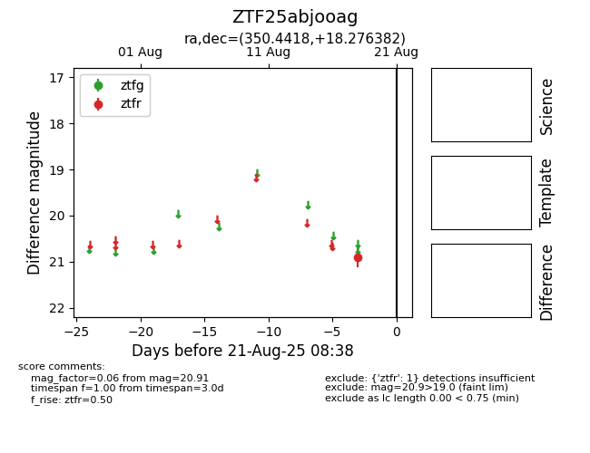

Target ZTF25abjooag at 2025-08-21 08:38, see:
FINK: fink-portal.org/ZTF25abjooag
Lasair: lasair-ztf.lsst.ac.uk/objects/ZTF25abjooag
ALeRCE: alerce.online/object/ZTF25abjooag
alt names
ZTF25abjooag (ztf,alerce)
coordinates:
equatorial (ra, dec) = (350.4418,+18.27638)
galactic (l, b) = (94.8731,-39.66000)
photometry
last ztfr=20.91
1 ztfr detections
